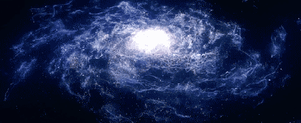

Origem do Sistema Solar
O sol e o Sistema Solar tiveram origem há 4,5 bilhões de anos a partir de uma nuvem de gás e poeira que girava ao redor de si mesma. Sob a ação de seu próprio peso, essa nuvem se achatou, transformando-se num disco, em cujo centro formou-se o sol. Dentro desse disco, iniciou-se um processo de aglomeração de materiais sólidos, que, ao sofrer colisões entre si, deram lugar a corpos cada vez maiores, os outros planetas. A composição de tais aglomerados relacionava-se com a distância que havia entre eles e o sol. Longe do astro, onde a temperatura era muito baixa, os planetas possuem muito mais matéria gasosa do que sólida, é o caso de Júpiter, Saturno, Urano e Netuno. Os planetas perto dele, ao contrário, o gelo evaporou, restando apenas rochas e metais, é o caso de Mercúrio, Vênus, Terra e Marte.